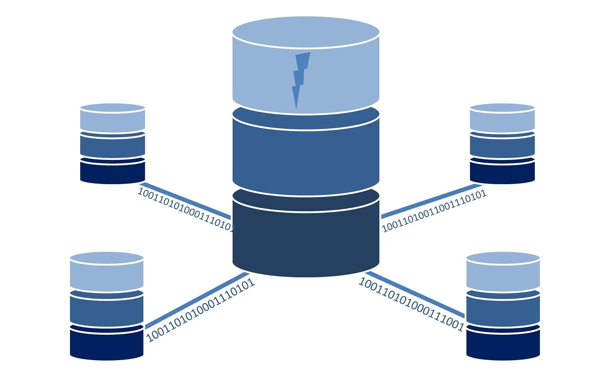

| Adatbázisrendszerek | Webprogramozás alapjai | Webes adatkezelő környezetek |
Adatbázisrendszerek
Oktató: Dr Bednarik László
Kredit: 5
- Az Adatbázis-kezelő feladata
- Az Adatbázis objektumai
- Adatbázis-kezelő rendszerek
- Az adattáblák kezelése
- Az adattáblák, kulcs fogalma
- Rekordok felvitele, modosítása, törlések
- Adattábla megjelenése, formázása
- Statisztikai számtások a táblában
- Keresés: automatikus, speciális szűrés űrlap szerint
- Lekérdezések: választó, törlő, frissítő stb.
- Adattábla létrehozása és összekapcsolása
- Táblák feltöltése
- Űrlap készítése
- Jelentés készítése

Forrás:
https://analyticstraininghub.com